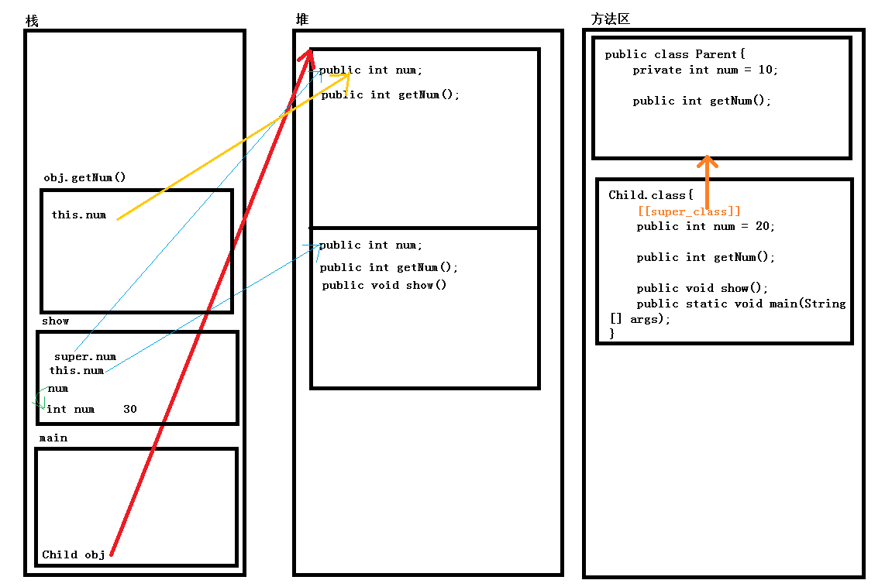

之前说过了Java中面向对象的第一个特征——封装，这篇来讲它的第二个特征——继承。一般在程序设计中，继承是为了减少重复代码。
继承的基本介绍
1 | public class Child extends Parent{ |
使用继承后，子类中就包含了父类所有内容的一份拷贝。
子类与父类重名成员的访问。
重名属性
当子类与父类中有重名的数据成员时，如果使用子类对象的引用进行调用，那么优先调用子类的成员，如果子类成员中没有找到那么会向上查找找到父类成员。例如
1 | public class Parent{ |
二者同样是创建的Child对象，那么为何一个是10，而一个是20 呢？ 在C/C++中经常提到一个概念就是，指针本身存储的是一个地址值，指针本身是没有任何数据类型的，而指针指向的地址有，我们在程序中定义的指针类型决定了代码在访问指针所指向的内存时是如何翻译这段内存的。Java中虽然说没有开放操作内存的能力，但是引用本身也是一个指针。如果将父类类型的引用来保存子类对象的地址，那么从引用类型来看，它只能看到父类的相关内容，所以这里它将对象所在内存当做父类的类型，所以第一个打印语句访问到的是父类的 num 成员。而第二个它能看到子类的整个内存，所以说它优先使用子类的 num 成员。
上面是第一种情况，即在外部直接调用，如果通过方法来访问呢
1 | public class Parent{ |
第一条输出语句实际上使用了Java中的多态特性，这个时候会调用子类的方法，而第二条直接调用子类方法，而在子类方法中通过this调用自身的 num 成员，所以这里会输出两个20
不管哪种情况，在通过对象的引用调用对象成员的时候会根据引用类型来翻译对应的内存，找到需要访问的变量，如果子类中未找到则向上查找父类，如果父类也未找到，则会报错。
下面来看看Java中继承的内存图来加深这个的理解
1 | public class Parent{ |
对象的内存分布大致如下:

首先JVM加载程序的时候将类定义放到方法区中，此时方法区中有两个类的定义，其中子类中有一个 [[class_super]] 标志，用于标明它的父类是哪个。然后创建main的栈并执行main函数，在main函数中创建了一个Child的对象，那么JVM会根据方法区中的相关内容在堆中创建子类对象， 子类对象中包含一整份的父类的拷贝。然后调用Show方法，它首先根据方法区中的标识查找，在子类中找到了这个方法创建方法栈并调用。在方法中，定义了一个局部变量 num，当访问 num这个变量时会首先在栈中查找，如果找到则访问，如果没有则在子类中查找，如果子类中也没有，则会访问父类。就这样在栈中找到了num。接着访问 this.num。 这个时候JVM会首先到子类中查找，找不到则会进一步查找父类。发现在子类中找到了。接着访问 super.num，那么JVM会主动去父类中查找。
show方法执行完了之后，JVM回收它的堆栈，接着调用getNum() 方法，查找方式与调用show的相同。后面的就不再说了，与之前的类似。
重写
向上面的例子中这样的。当子类与父类的方法名、参数列表相同时，如果用子类对象进行调用，那么会调用子类方法，这个时候父类的同名方法就被重写了。注意：这里并没有强调返回值也一样，其实这里只需要返回值能正常的发生隐式转换即可。这里也没有规定它的访问权限，这里只要求子类方法的访问权限大于等于父类方法的访问权限，也就是在同一条件下保证二者都能访问。虽然没有这两方面的限制，但是一般情况下父类的方法与子类重写的方法在形式上应该是完全一样的。
1 | public class Parent{ |
上面的代码并没有实现重写的功能，但是如果程序员自己理解不到为，认为这是一个重写，并且在代码中按照重写在使用，那么编译虽然不会报错，但是在运行过程中可能会出现问题，这个时候可以使用 @Overwrite 注解，来告诉编译器，这里是一个重写，如果编译器判断这个不是重写，那么编译会报错，这样就将运行时错误提升到了编译时，有注意bug的排除。
注解与注释有什么相同与区别呢：我认为二者都是用于对程序做一个说明，但是注释是给人看的，注解是给机器看的。
重写与重载有什么区别呢？
- 重写是发生在类的继承关系中的，要求函数名、参数列表相同
- 重载并没有规定使用的场合，要求函数名相同、而参数列表不同
既然说到重载，我想起来了java与c++中重载的一个区别
1 | void sayHello(long f); |
根据上述函数的定义，java和c++中都形成了一个重载的关系，如果在C中使用代码 sayHello(10) 来调用的时候，因为这里的10既可以理解为long也可以理解为int，所以这里发生了二义性，编译会报错，而java中 10 默认为int，所以这里会调用int参数的函数，而想要调用long型的参数，得写成 sayHello(10L)。这算是二者之间和有趣的一个现象。
构造函数
与C/C++中的相同，调用构造的时候会优先调用父类构造，像上面的代码中，并没有明显的调用构造，在创建类的时候会隐式的调用构造，并在子类构造中隐式调用父类构造。但是一旦手工定义了构造，那么编译器将不再额外提供构造。
1 | public class Parent{ |
Child构造函数默认会调用父类的无参构造，但是由于父类提供了构造，此时编译器不再提供默认的无参构造，所以这里找不到父类的无参构造，报错。这个代码可以进行如下的修改
1 | public class Child extends Parent{ |
这里使用super关键字显示调用父类的带参构造。或者定义一个带参构造，编译器会默认为你添加上调用父类带参构造的过程。
在Java中super关键字的作用主要有以下几点:
- 在子类中访问父类成员
- 在子类中调用父类构造函数，这种用法必须保证super在子类构造中是第一条被执行的语句，而且只能有唯一的一条
我们说super代表父类，那么this代表的就是类本身，那么它有什么具体的作用，又有哪些需要注意的点呢？
- this可以访问本类成员变量
- 在本类的成员方法中访问另一个成员方法
- 在本类构造方法中访问另一个构造
注意：第3中用法中，this关键字必须是构造方法执行的第一条语句，而且只能有唯一的一条。这条规则与super关键字的相同，那么在构造中既有this又有super的时候该怎么办呢？答案是无法这么使用，Java中规定this和super关键字在构造函数中只能出现一个。
Java中的 继承关系
在C++中，最让人头疼的是多继承的菱形继承关系，为了防止二义性，Java禁止多继承，只允许单继承。但是java中运行多继承，并且一个父类运行有多个子类。
在Java的多级继承中如果出现同名的情况，访问时该怎么办呢？
原则仍然相同，根据new出来的对象和左侧保存对象的引用类型来判断，如果是父类类型，则访问成员变量时只能访问父类，如果是访问方法则需要考虑多态。如果创建的是父类则只能访问父类的成员变量和方法